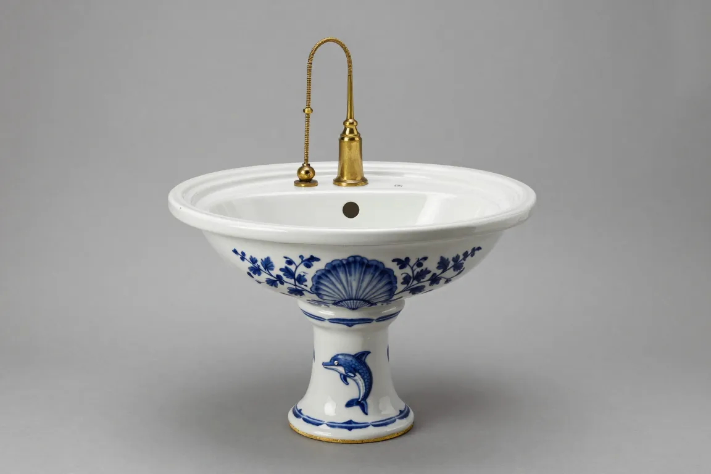

керамика · 1870–1914 · также: Викторианская керамика для уборной, Сантехника с трансферной печатью, Керамика поздневикторианской ванной
Первая керамическая ванная комната в доме. Умывальники, унитазы и бачки из гончарной посуды и раннего стеклованного фарфора несут синюю, коричневую или полихромную трансферную печать, лепные цветы и золочёные линии.

Главная идея
Новый санитарный прибор должен выглядеть как тонкий фарфор, чтобы семья видела чистый и богатый предмет в комнате, которую раньше прятали.
Принципы дизайна
Покрывайте каждую видимую сторону трансферной печатью в один–три цвета, например синим, коричневым или зелёным.
Лепите рельефный цветок, раковину или дельфина на борту, ручке и пьедестале.
Глазуруйте чашу белым и толсто, 0,5–1 мм, чтобы её легко было чистить.
Ставьте на смывной унитаз простой изогнутый сифон, чтобы 9 литров воды очищали чашу.
Формуйте умывальник с широким бортом, тремя отверстиями под краны и маленькой прорезью перелива сзади.
Монтируйте бачок высоко на стене с латунной цепочкой и фарфоровой ручкой.
Добавляйте золочёные линии на борт только тонкого умывальника и делайте это последним обжигом.